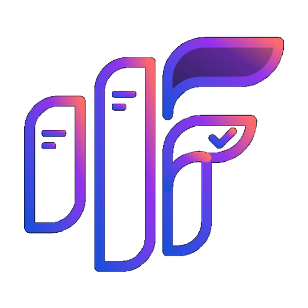
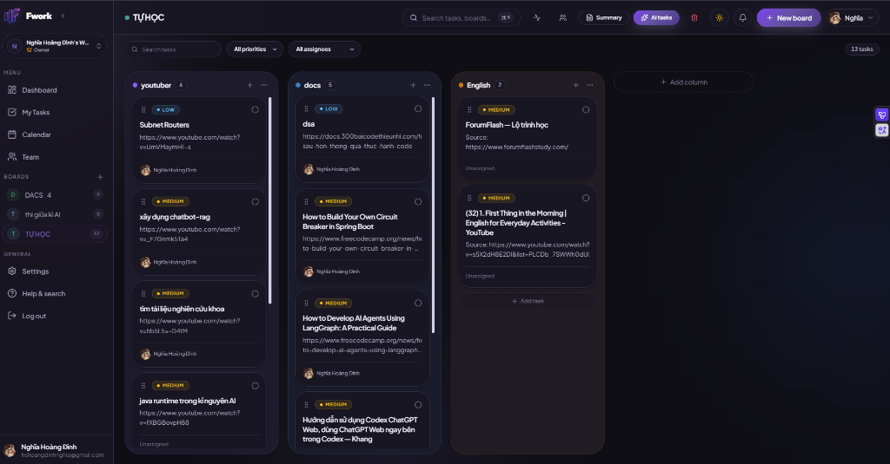
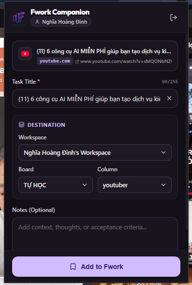
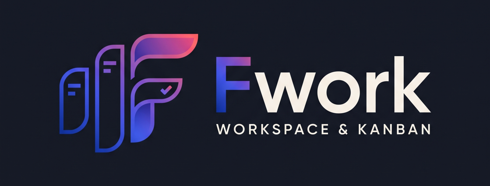

Work shouldn't feel like wrestling with disconnected tools.


Hướng dẫn thực chiến 6 công cụ AI giúp tự động hóa quy trình làm việc, gom nhặt thông tin và phân rã task thông minh từ video sang Kanban.

